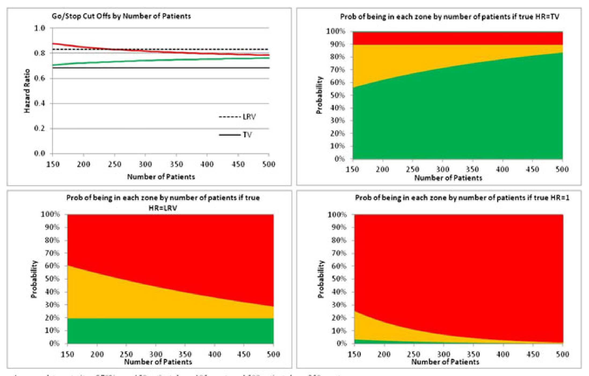

A Review of Proof-of-Concept Studies and Go/No-Go Decision-Making
Created: 2024-07-25 Thu 17:53
Proof-of-Concept (PoC) Trials
What is PoC?
- A PoC trial is the first time an experimental compound is tested in patients against a clinically-relevant endpoint (Walley et al. 2015)
- “PoC [criteria] is reached when the cumulative weight of evidence supports the belief that the drug is sufficiently likely to reach the project objective to justify the resources required for the next major cycle of investment” (Paul Rolan)
- “A PoC trial is a trial to support a PoC decision” (Fisch et al. 2015)
- “A PoC trial is the earliest point in the drug development process at which
the weight of evidence suggests that it is ‘reasonably likely’ that the key
attributes for success are present and the key causes of failure are absent”
(DiMasi, Hansen, and Grabowski 2003)
- “Should overcome all major hurdles that preclude a major commitment to further development”
- “PoC [decision] is not generally viewed as being repeated at various stages of the drug development process”
Study questions
- The PoC should consider two questions (Fisch et al. 2015)
- Does the drug work at all?
- (significance (Fisch et al. 2015), efficacy criterion (Walley et al. 2015) )
- Does the drug have a relevant clinical effect?
- (relevance (Fisch et al. 2015), precision criterion (Walley et al. 2015))
- Does the drug work at all?
- Alternatively, are we confident enough to commit to the full development of the drug?
- “Statistical significance versus placebo alone will in general not be an
appropriate PoC criterion” (Fisch et al. 2015)
- “Drugs with minor average improvement relative to placebo will not be competitive even if found to be statistically significant”
General considerations
- Requirements for being “reasonably likely” (i.e., “Go”) should
(Cartwright et al. 2010)
- increase if the consequences of advancing an ineffective or unsafe drug are unusually serious (e.g., the drug is meant to substitute for an already effective drug for a life-threatening disease)
- decrease if the benefits of advancing a new drug quickly are particularly high (e.g., a therapeutic for an epidemic)
- Example questions (Cartwright et al. 2010)
- Is this a breakthrough treatment in life-threatening disease for which there are no existing treatments?
- Is this a programs with low subsequent costs (costs of false-positive advancements are low)?
- Is this a programs with multiple backup candidates in the company pipeline (replacement of a candidate falsely terminated is cheap)
- “The human temptation to avoid learning negative truths must be routinely
outweighed by the discipline of the organization”
(Cartwright et al. 2010)
- “Opinions are too easily shaped after seeing the actual results of the study” (Cartwright et al. 2010)
- “Commercial analyses show that the termination of candidate drugs is most cost-effective when the decision is made early” (DiMasi, Hansen, and Grabowski 2003)
A consistent Go/No-Go decision-making framework
- Enables senior leaders to see consistency in the approach, with agreement on the criteria coming from agreeing the underlying assumptions and whether or not the operating characteristics are reasonable to enable clear decisions to be made (Frewer et al. 2016)
- Allows standard figures for displaying the criteria to be used and software developed to create them instantly (Frewer et al. 2016)
Go/No-Go Decision-Making
Recall the study questions
- “Does the drug work at all?”
- “Does the drug have a relevant clinical effect?”
Lower reference value (LRV) and target value (TV)
- Lower reference value (LRV)
- A treatment effect threshold below which the drug would be assumed to have no value (Cartwright et al. 2010)
- The ’dignity’ line for developing a compound (Lalonde et al. 2007)
- The smallest clinically meaningful effect for the development of a compound (Frewer et al. 2016)
- The lowest level of efficacy that would be considered clinically meaningful (Frewer et al. 2016)
- The treatment effect of a competitor known to have mild efficacy (Lalonde et al. 2007)
- It may be set to \(0\) (i.e., assume no difference) in cases where there is no alternative treatment or where differences other than efficacy could be sufficient for commercialisation, but it is usually set at a mild efficacy effect in consideration of available therapies (Frewer et al. 2016)
- The downside case (minimum level of activity of clinical/commercial interest) in the target product profile (TPP) could be used as LRV (Frewer et al. 2016)
- Target value (TV)
- A market estimate of commercial viability (Lalonde et al. 2007)
- The desired effect to potentially establish the compound as the treatment of choice (Frewer et al. 2016)
- The desirable level of clinical activity, which would encourage physicians to switch their patients to the new treatment (Frewer et al. 2016)
- A competitive efficacy threshold below which the drug is not worth further evaluation (Fisch et al. 2015)
- Also known as the minimum clinically important difference, critical threshold, required difference, boundary of indifference, walk away point (Fisch et al. 2015)
- TV is generally smaller than the alternative treatment effect used in power calculation (Fisch et al. 2015)
- The base case (target level of activity) for an endpoint in the TPP could be used as TV (Frewer et al. 2016)
Example I
- (Lalonde et al. 2007)
- In order to limit the risk of progressing a compound with relatively little efficacy, 80% confidence that the treatment effect, \(\Delta\), is better than LRV might be desired
- To avoid terminating a commercially viable compound with \(\Delta\) better than TV, 10% risk might be taken (Lalonde et al. 2007)
- Dual criteria (\(PCT_x\): the \(x\)-th percentile of the distribution of
\(\widehat \Delta\))
- Go: \(PCT_{20} > LRV\) and \(PCT_{90} > TV\)
- Stop: \(PCT_{90} \leq TV\)
- Consider: otherwise
Figure 1: The left and right ends correspond to \(PCT_{20}\) and \(PCT_{90}\), respectively.
Recall: Bayesian decision-making
- A typical Yes-No decision \(\underline{P}(\Delta > \underline{R}|Data) >
\underline{C}\)
- A PRC rule
- Based on the posterior probability of the treatment effect(or parameter of interest), \(P(\Delta|Data)\)
- Expresses the likelihood of achieving effect size \(R\)
- Utilizes the desired minimum probability as the threshold \(C\)
Example II
- (Fisch et al. 2015)
- Significance (meeting LRV): \(P(\Delta > LRV | Data) \geq 1 - \alpha\)
- Relevance (meeting TV): \(P(\Delta > TV | Data) \geq \gamma\)
- \(LRV = 0\), \(TV = 5\%\), \(\alpha = 0.1\), and \(\gamma = 0.5\)
- Go: 1) meeting LRV only, or 2) meeting TV only, or 3) meeting both
- No-Go: 1) failing to meet LRV, or 2) failing to meet TV, or 3) failing to meet both
- Consider: Otherwise
Example III
- (Frewer et al. 2016)
- Consider a randomized two-arm phase II oncology study with a PFS endpoint
- Base case in TPP: Median PFS 10 vs. 14.6 mths (HR=0.68)
- Downside case in TPP: Median PFS 10 vs. 12 mths (HR=0.83)
- The study was sized to show an HR of 0.68 with 90% power and 20% one-sided
Type I error
- 126 events, 180 patients, assuming data maturity (fraction of patients with an observed event) of 70%
- Go: Observed HR better than \(0.72\)
- Stop: Observed HR worse than \(0.86\)
- Consider: Otherwise
Choices of the probability thresholds
- Recall
- Meeting LRV: \(P(\Delta > LRV | Data) \geq C_1\)
- Meeting TV: \(P(\Delta > TV | Data) \geq C_2\)
- What should be \(C_1\) and \(C_2\)?
- e.g., The standard approach with AstraZeneca in early development is to use 10% for the false stop risk and 20% for false go risk
- \(C_1\) for LRV is related to type I error
- \(C_2\) for TV is related to power
- An alternative common choice of \(C_2\) is \(0.5\) (Walley et al. 2015)
- Fix \(C_2=0.5\) and then to determine TV with this probability threshold in mind
- Typically, this criterion is equivalent to comparing the observed effect estimate to TV. That is, TV becomes MDD
- This approach essentially defines TV as the efficacy boundary between compounds that we would prefer not to develop further and those that we would
Operating characteristics (OCs)
What OCs can be associated with a Go/No-Go decision?
- (Lalonde et al. 2007)
- Probability of trial “success”, i.e., probability of “Go”
- Probability of a “correct” decision
- e.g., the truth is \(\Delta \leq TV\), and the decision is “Stop”; or the truth is \(\Delta \geq TV\) and the decision is “Go”
- (Frewer et al. 2016)
- False stop risk
- similar to type 2 error
- False go risk
- similar to type I error
- False stop risk
Examples
Figure 2: (Fisch et al. 2015): For a given sample size, the probabilities of Go/No-Go for different true treatment effects

Figure 3: (Frewer et al. 2016): For a given sample size, the probabilities of Go/No-Go vs. different true treatmers

Figure 4: (Frewer et al. 2016): For different treatment effects, the probabilities of Go/No-Go vs. sample size
Figure 5: (Walley et al. 2015): Observed treatment effect boundary for Go/No-Go
Discussion
Understand PoC
- What are the differences between phase 1, 2, 3 trials and PoC trials?
- What are your questions for a PoC trial?
- How confident will you be after a PoC trial to commit to a full development of the drug?
- Other questions?
Summary of concepts
- LRV
- TV
- Dual criteria
- Operating characteristics